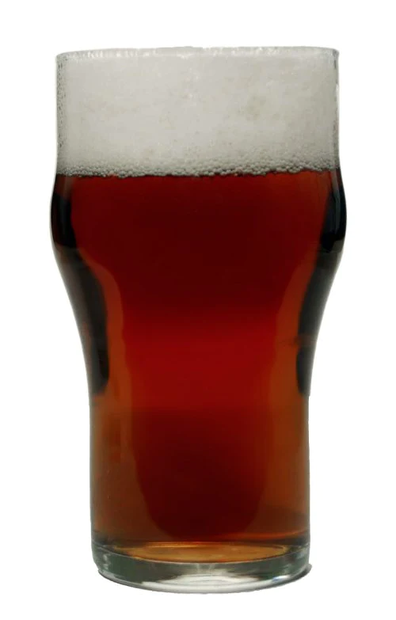

Irish Beer Styles
Irish Red Ale
History
While Ireland has a long ale brewing heritage, the modern Irish Red Ale style is essentially an adaptation or interpretation of the popular English Bitter style with less hopping and a bit of roast to add color and dryness, although some suggest a longer history. Rediscovered as a craft beer style in Ireland, today it is an essential part of most brewery lineups, along with a pale ale and a stout.
Overall Impression
An easy-drinking pint, often with subtle flavors. Slightly malty in the balance sometimes with an initial soft toffee or caramel sweetness, a slightly grainy-biscuity palate, and a touch of roasted dryness in the finish. Some versions can emphasize the caramel and sweetness more, while others will favor the grainy palate and roasted dryness.
Irish Stout

History
The style evolved from London porters, but reflecting a fuller, creamier, more “stout” body and strength. Guinness began brewing only porter in 1799, and a “stouter kind of porter” around 1810. Irish stout diverged from London single stout (or simply porter) in the late 1800s, with an emphasis on darker malts and roast barley. Guinness began using flaked barley after WWII, and Guinness Draught was launched as a brand in 1959. Draught (“widget”) cans and bottles were developed in the late 1980s and 1990s.
Overall Impression
A black beer with a pronounced roasted flavor, often similar to coffee. The balance can range from fairly even to quite bitter, with the more balanced versions having a little malty sweetness and the bitter versions being quite dry. Draught versions typically are creamy from a nitro pour, but bottled versions will not have this dispense-derived character. The roasted flavor
Irish Extra Stout

History
Same roots as Irish Stout, but as a stronger product. Guinness Extra Stout (Extra Superior Porter, later Double Stout) was first brewed in 1821, and was primarily a bottled product.
Overall Impression
A fuller-bodied black beer with a pronounced roasted flavor, often similar to coffee and dark chocolate with some malty complexity. The balance can range from moderately bittersweet to bitter, with the more balanced versions having up to moderate malty richness and the bitter versions being quite dry.